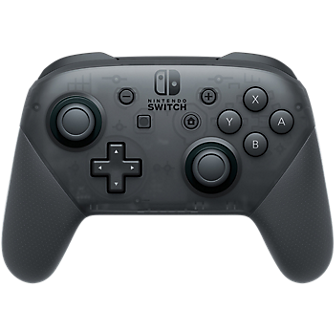
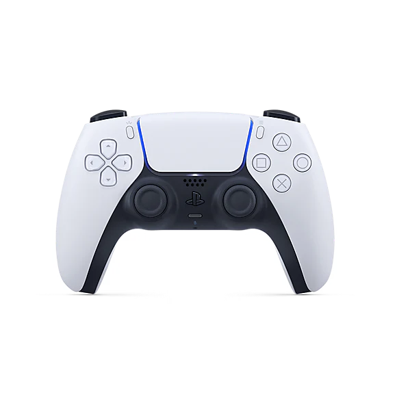

Cross d-pad
- This is the classic D-pad design.
- Consists of a single piece of plastic molded into a cross shape with four directions (up, down,left, right).
- The design has been widely adopted and imitated in various forms by other console manufacturers.
Circle d-pad
- Similar to a cross d-pad but fills the gaps to form a circle.
- The circle can be more comfortable for some players as it allows for smoother circular movements and diagonal directions.
Button d-pad
- Splits the d-pad into four separate buttons.
- Allows the d-pad to be used as action buttons, seen with the Nintendo Switch joycons